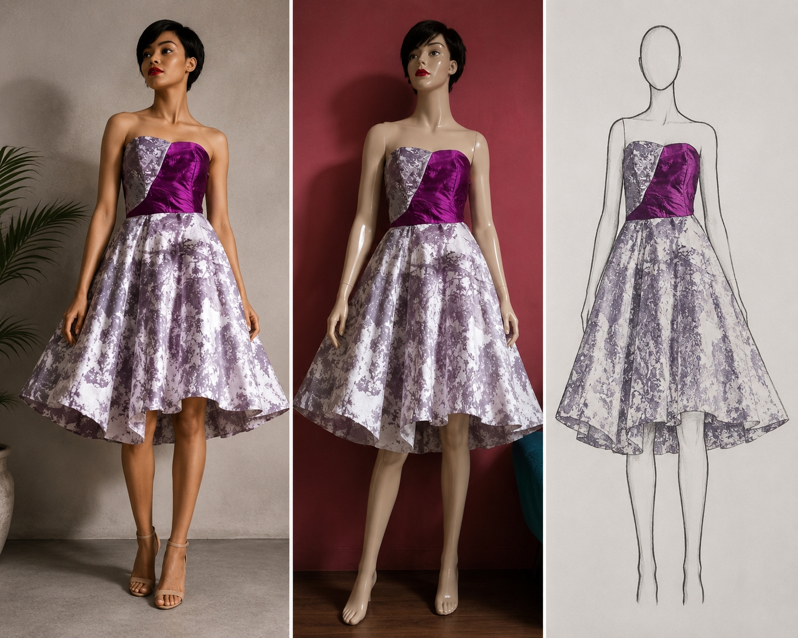
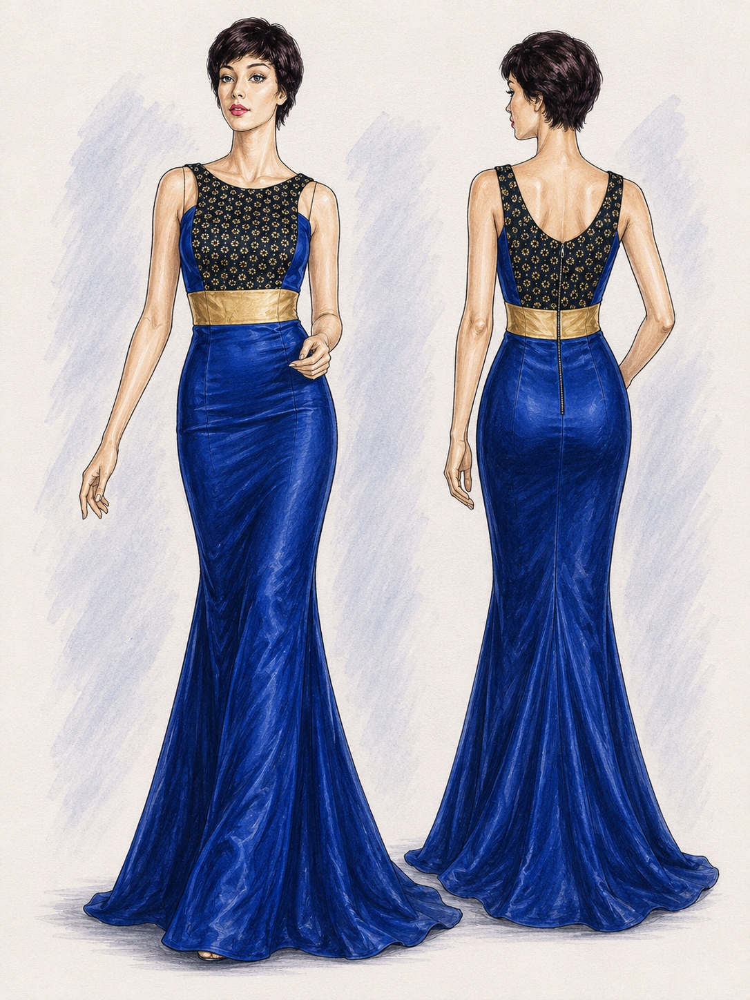
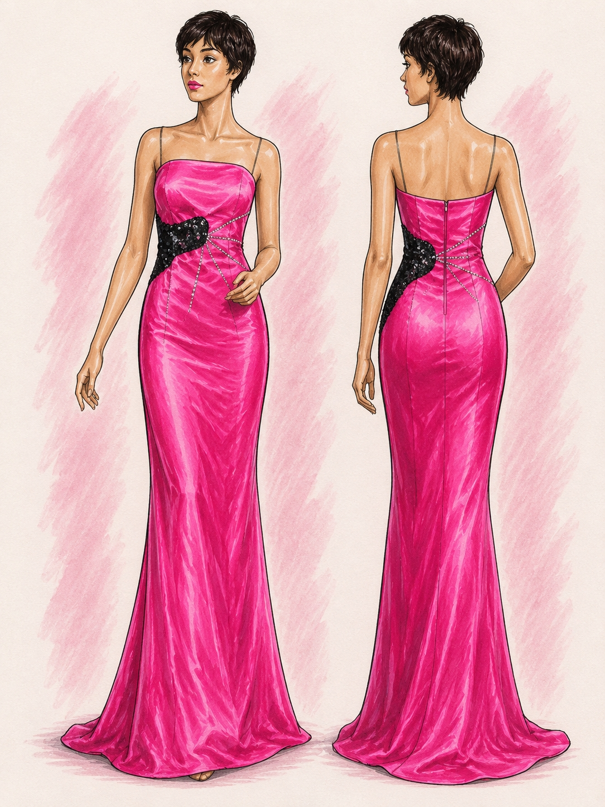
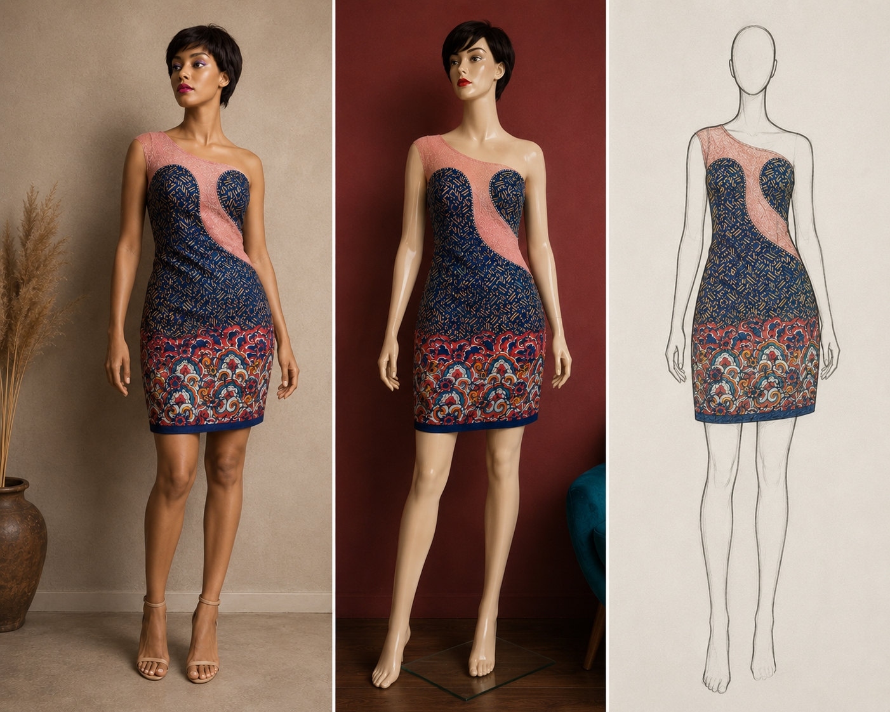
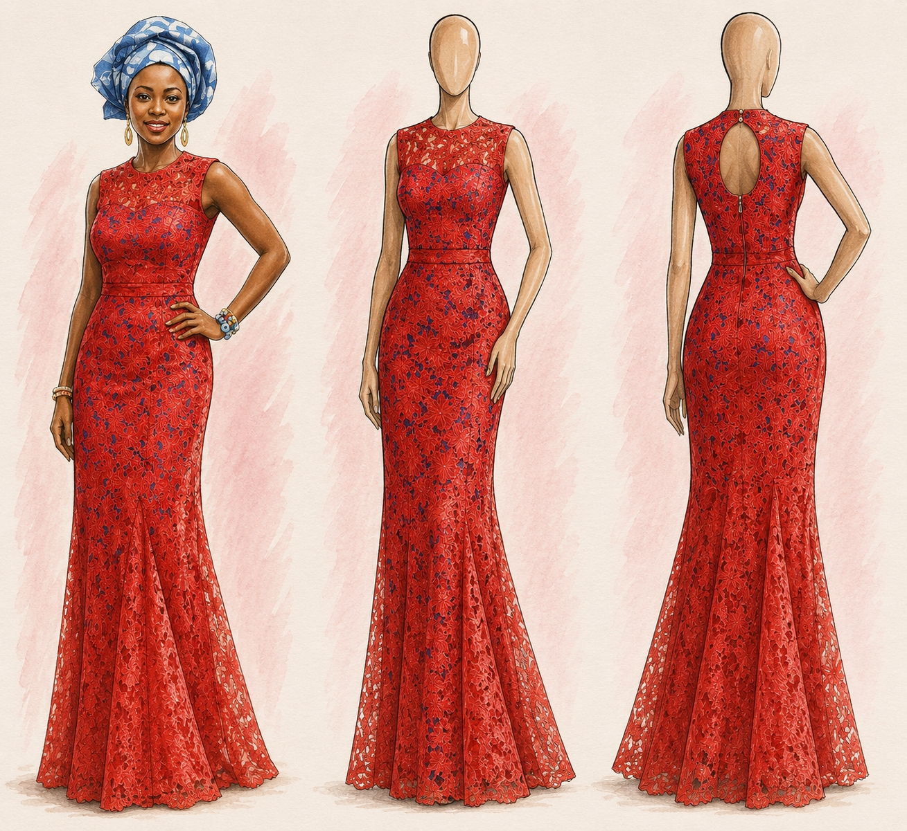
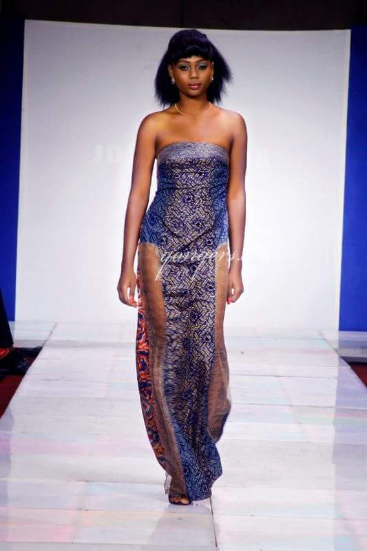
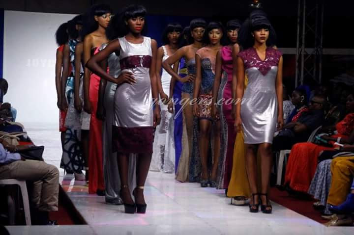

Orchid
Delicate yet assured, Orchid draws on floral elegance through graceful lines and a silhouette designed to celebrate femininity.
 Joycenuwa
Joycenuwa
Fashion Archive · 2015
Eveningwear Collection
ÉCLAT is an early Joycenuwa eveningwear collection centred on glamour, confidence and expressive femininity. Through rich colour, fitted silhouettes, flowing skirts and reflective fabrics, the collection explores elegance as a form of confidence and self-expression.
This page presents selected looks from the ÉCLAT collection together with runway photographs from its presentation at the Nigerian Television Fashion Show. The collection reflects Joycenuwa’s early exploration of eveningwear, combining bold colour, texture and sculptural silhouettes.
← Back to FashionA selection of evening garments exploring colour, surface, proportion and confident silhouettes.
Delicate yet assured, Orchid draws on floral elegance through graceful lines and a silhouette designed to celebrate femininity.

Amora explores romance through soft structure, elegant proportion and a confident interpretation of occasion dressing.

Canopy balances structure and softness, creating a poised silhouette inspired by shelter, height and quiet grandeur.

LOOK
Eveningwear
Bloom celebrates colour, vitality and self-expression through a feminine silhouette with a vivid and uplifting presence.

Contrasting patterns and surfaces come together in Mosaic, transforming separate elements into a unified statement of texture and movement.

Bold colour and a sculpted silhouette give Rouge its commanding presence, expressing passion, confidence and evening glamour.
Runway Presentation
Selected runway photographs from the Nigerian Television Fashion Show, where ÉCLAT was presented alongside the EDEN collection.

Nigerian Television Fashion Show
A runway presentation from the ÉCLAT eveningwear collection.

RUNWAY
Nigerian Television Fashion Show
Another runway presentation from the ÉCLAT eveningwear collection.